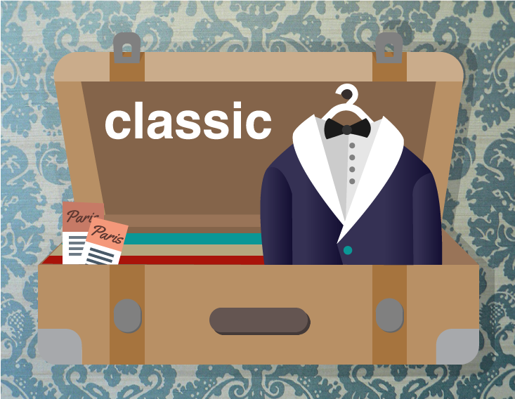

GFTI is made unique by it's THEMES! The user is presented with different customization widgets, depending on the theme that is selected. This is a preview of the themes:



We have carefully crafted 4 different themes to choose from. Each theme includes different customization assets that will give a different visual identity to your postcard.
If you are using this site on a mobile device, you can take a photo and directly upload it to the site. Alternatively, you can upload a photo from your desktop or provide an image URL.
You can use 5 different widgets to customize your design. Tools include image filters, border themes, color selection, font selection and subtext customization.
Fill in a custom message and address the card for mailing. You can save your design and share it with the GFTI community. This app uses the Lob API to send the postcard using the USPS.
When you have completed your postcard, you can mail it. You will recieve an estimated delivery date. Each postcard costs $1.50 to send, which includes printing and postage. We use Stripe for secure payments.
I encountered difficulties when I sought to merge user settings with HTML templates on a NodeJS server before pushing all data to the Lob API. Lob is great (!!) but very particular about the format in which it receives data. Each SVG frame is a different template. When users make adjustments to their design in the image composition page of the tool, these settings get pushed as key value pairs to my server. The server then handles the logic for how the data gets interpolated into the HTML custom templates.
Dynamic layouts were a challenge. There is a tension between wanting to give the user ultimate control over the aesthetic of the postcard and keeping the settings limited for content management reasons. The site strikes a nice balance between allowing for customization and variety while still presenting a consistent aesthetic across the different themes.
The site marries modern web-design with an old-world aesthetic. I developed a visual language for the site that uses modern, responsive design while making the user feel like he or she is in Wes Anderson's living room. One of the greatest challenges of this design was to give the site character while preventing it from conflicting with postcard themes that the user can select. Ultimately the site feels fresh and user friendly but it is quite distinct.
This site was made in 2-weeks! While most of the assets are originals, I did end up using a few assets from Creative Market due to project deadlines. Given the unique nature of the front end design and the robust back end that supports the postcard creation tool, I've very proud of how it turned out.